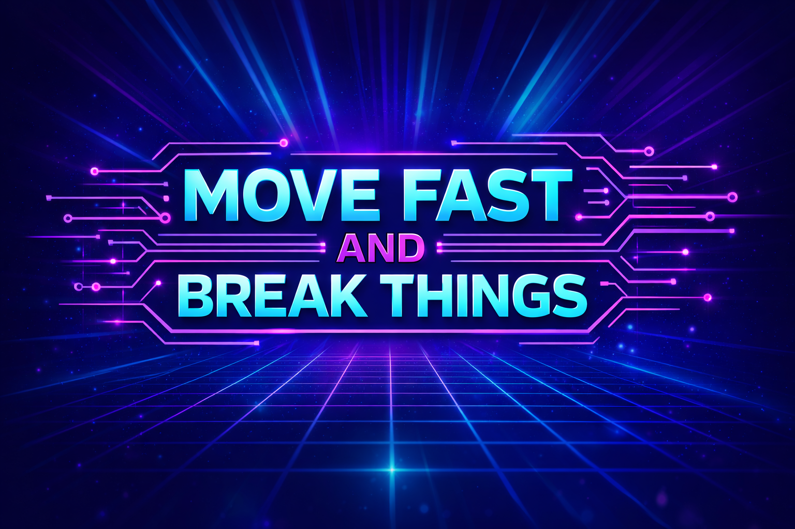
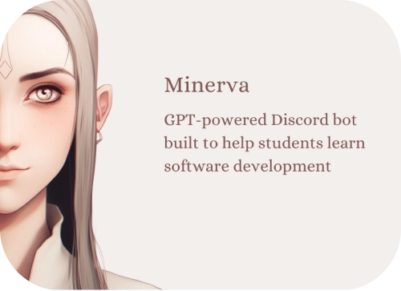
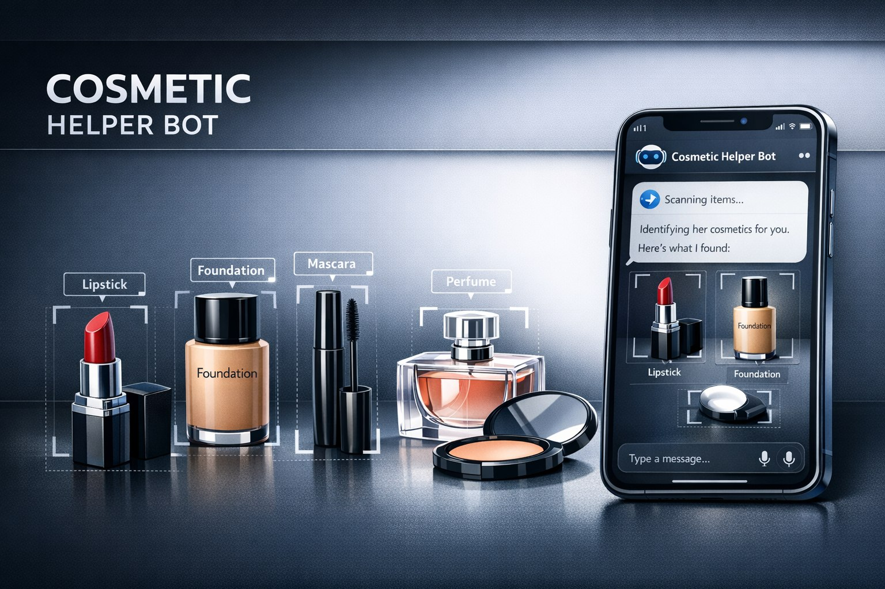

MOVE FAST AND
BREAK THINGS
We are a community of software engineers and product developers.

We are a community of software engineers and product developers.


A GPT-powered Discord bot built to help students learn software development.

A bot that helps in difficult moments by recognizing a girl's cosmetics.
An application assistant for headmen to mark student attendance.
We are committed to making our community a welcoming space for everyone. Whether you're a seasoned developer, a beginner, or just curious, you're welcome here! We are dedicated to fostering growth, collaboration, and continuous learning. Our mission is to cultivate an environment where individuals support each other in developing exceptional programs and expanding their knowledge.
A community where passionate engineers collaborate, experiment, and grow together – fast.
We are a group of motivated, self-organized, hardworking, and kind people of very different levels of experience who are passionate about software engineering and product building. Among our members are experienced engineers and leaders such as Ivan Perkhun (Lead DS at BUDU), Irina Kogai (Engineering Lead at YouTalk), and Yurij Mikhalevich (Staff AI Engineering Lead at QA Wolf).
"The community helped gain teamwork experience, master Git, and explore web development. I've tried AI, web, and mobile development here and discovered my true passion."
– Danil Ostaptsov"The community motivates me to work on my project every day."
– Ivan PchelkaWe build fun, cool projects together, like Aibyss – a game where you code an AI to compete in a survival game, – and Minerva – an AI-powered bot that helps us learn more. We also host talks and webinars, and learn new things, like recent advancements in Quantum Computing, all the time!
While the opportunities you receive may be expensive elsewhere, joining our community costs $0 USD. This lets us, unlike other communities and courses, value quality of the community members over quantity. We believe all of us can learn from each other regardless of experience or seniority.
To maintain our $0 USD membership, we ask you to contribute regularly. Every community member is expected to participate in the community projects (or lead new ones), attend and host community meetings and webinars, and participate in and organize community events. We take this very seriously. Members typically contribute 2–4 hours weekly. The best part is that the actual learning, growth, and development happen when you actively do all of these things!
Ready to contribute to the community and believe we will have fun working on cool projects together? Start by picking your first GitHub issue today!
If you have any questions, contact us on mfbt.community@gmail.com.